Cake Pops Halloween

TRICK or TREATS!! Vous l’aurez compris aujourd’hui il y a des cake pops Halloween!
Le 31 octobre, jour d’Halloween, approche à grand pas !! Je vous propose donc une recette de cake pops Halloween au chocolat au lait et aux noisettes.
C’est bien beau de parler d’halloween mais savez vous au moins ce que c’est? Halloween n’est autre que l’abréviation d' »All Hallow’s Eve ». Ce qui signifie « la veille de la Toussaint ». Il s’agit à l’origine d’une fête très ancienne fête Celte, la fête de Samain. On peut donc dire que Halloween est célébré depuis des siècles principalement en Irlande, en Écosse et au Pays de Galles.
Ce n’est que plus tard que la fête d’Halloween fut introduite en Amérique du Nord avec l’arrivée d’émigrants Écossais et Irlandais. Aujourd’hui un grand nombre de pays célèbrent Halloween permettant ainsi de croiser des vampires (avis au fans de twilights 😉 ), des sorcières et monstres en tous genres dans les rues et les lotissements si paisibles les autres jours de l’année!
Ma recette de cake pops Halloween est très ludique à réaliser avec des enfants. Entre la réalisation de la pâte et l’atelier dessin qui suit derrière vous pouvez être sûr de passer un très bon moment et de les occuper un bon bout de temps! 🙂 Vous reconnaitrez sans doute Jack Skellington de l’étrange Noël de Mr Jack tout droit sorti de la tête de Tim Burton, ainsi que de mignonnes petites citrouilles que je me suis beaucoup amusée à réaliser!
Et pour retrouver toutes les recettes d’Halloween du blog c’est par ici: HALLOWEEN. C’est parti pour la recette !
Enregistrer
Enregistrer
Ingrédients
- Beurre - 125g
- Chocolat au lait - 200g
- Noisettes en poudre - 50g
- Oeufs - 3
- Sucre - 125g
- Farine - 100g
- Philadelphia - 150g
- Candy melt blanc - 335g
- Colorants liposolubles
- Huile végétable - 3càc
- Batons de sucette pour cake pops
- Tic-tac verts
Instructions
- Au bain marie, faire fondre le beurre et le chocolat
- Préchauffer le four à 180°
- Dans un grand récipient, battre les œufs et le sucre
- Ajouter la farine et les noisettes en poudre petit à petit et mélanger jusqu'à obtenir une pâte bien homogène
- Verser le chocolat fondu et mélanger
- Beurrer votre moule et verser la pâte
- Enfourner à 180° pendant 25 minutes
- Passer le gâteau au mixeur ou émietter le en le coupant en deux et en frottant chaque part entre elles
- Une fois le gâteau émietté en totalité, ajouter le cream cheese ( Philadelphia, StMoret etc..)
- Tasser la pâte à l'aide de vos mains afin d'obtenir une texture homogène (le cream cheese doit être totalement incorporé au gâteau)
- Former maintenant dans vos mains des petites boules de pâte (les miennes font environ 20 à 27g chacune)
- Les mettre au frais pendant 1h
- Pendant ce temps, faire fondre le candy melt selon les indications du paquet. J'ai choisi le bain marie tout simplement car je n'ai pas de micro-onde (/!\ Ne pas remuer avant que tout le candy melt ne soit fondu /!\)
- Ajouter de l'huile végétale (ou du crisco ou encore de la végétaline) afin de liquéfier un peu le candy melt
- Mettre le candy melt dans un bol avec suffisamment de profondeur pour pouvoir plonger entièrement votre cake pops
- Tremper les bâtons à cake pops dans le candy melt et planter les dans les cakes pops
- Remettre au frais pendant 15 min
- Tremper chaque cake pops dans le candy melt (il ne fait pas remuer la cake pop mais juste la tremper)
- Tapoter ensuite sur votre mains comme sur la photo tout en tournant votre cake pops pour faire tomber l’excédent de candy melt
- Planter vos cake pops dans du polystyrène et placer les au frais le temps que le glaçage durcisse
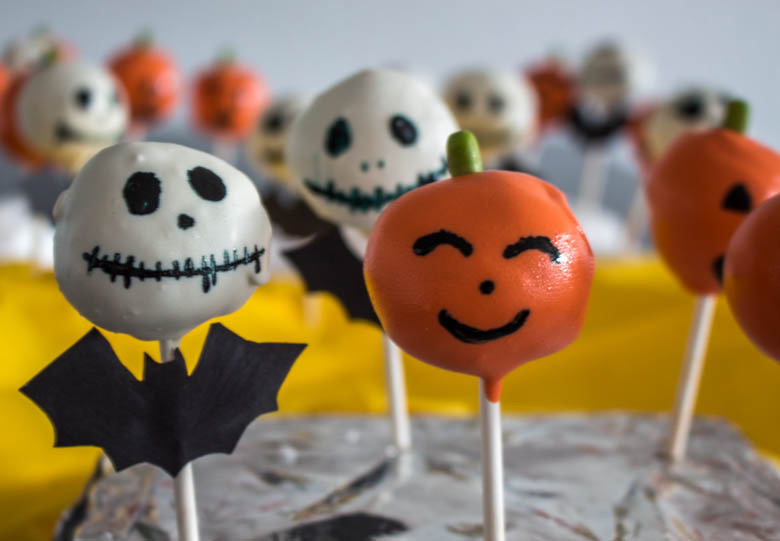
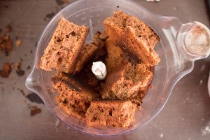
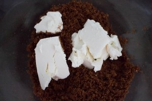
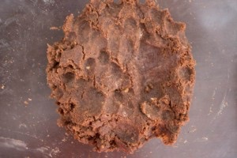
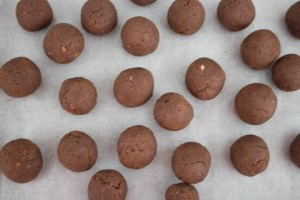
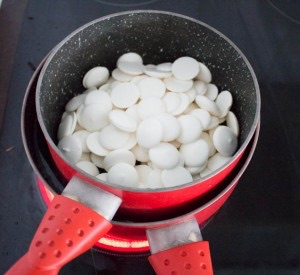
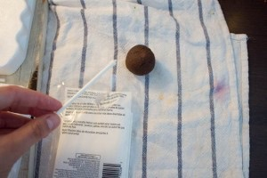
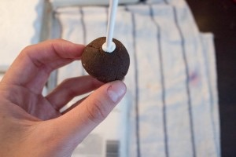
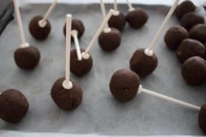
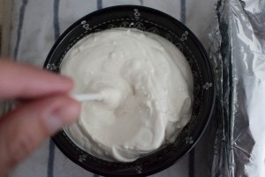

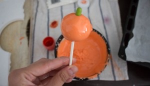
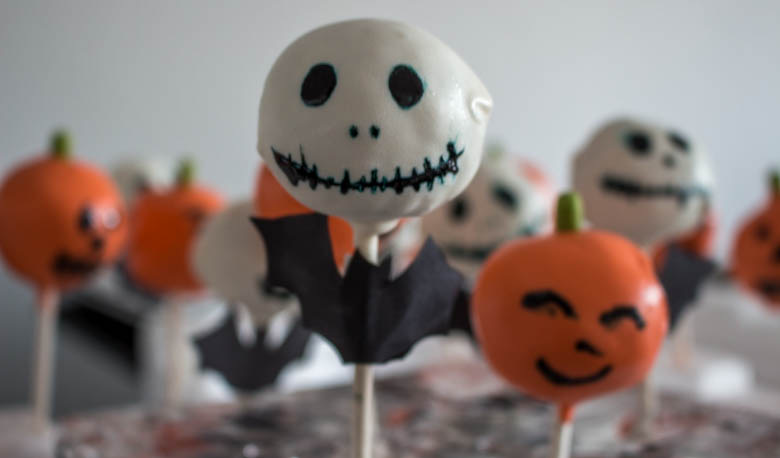
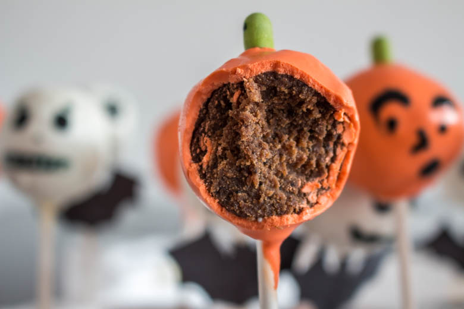
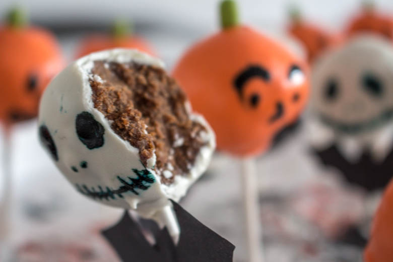
Les tips de la communauté
Recette bien reçue avec des commentaires appréciatifs sur l'aspect esthétique. Les visiteurs sont intéressés par la réalisation des cake pops Halloween.
Ajustements signalés
- un bout de ma phrase ^^)